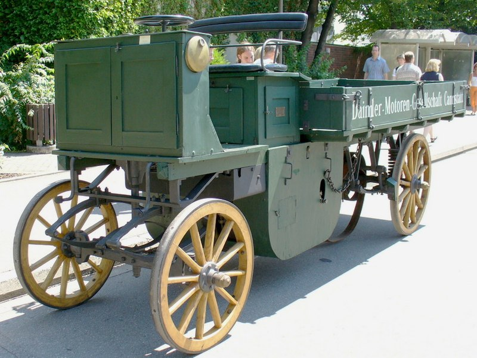
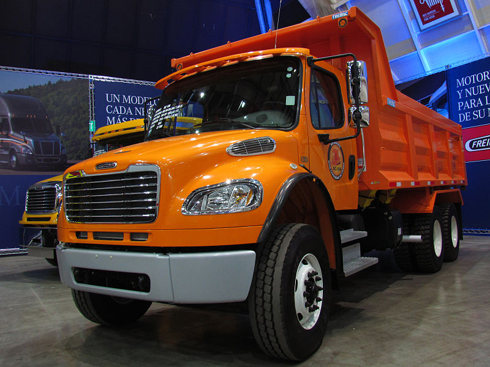
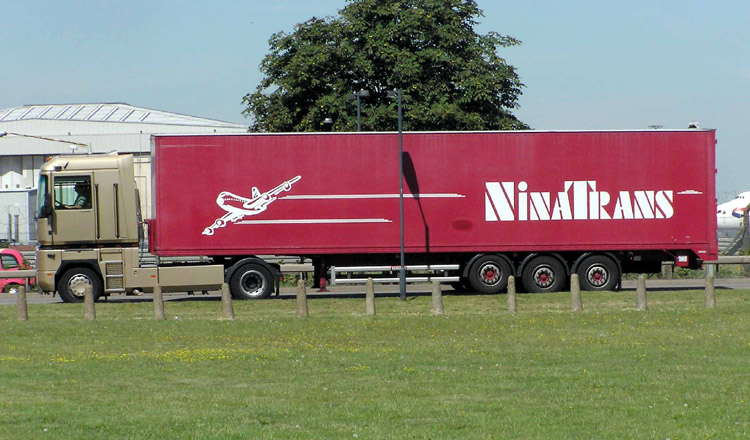

Camião
Camiões e carros têm um antepassado comum: o "fardier" movido a vapor de Nicolas-Joseph Cugnot construído em 1769. Contudo, camiões a vapor não eram comuns até 1800. As estradas nesta altura eram construídas para cavalos e carruagens, limitando o movimento deste veículos, geralmente de uma fábrica até uma estação de comboio. O primeiro semiatrelado surgiu em 1881, puxado por um tractor a vapor Dion. Camiões movidos a vapor foram vendidos em França e Estados Unidos até a véspera da Primeira Guerra Mundial, e o início da Segunda Guerra Mundial no Reino Unido.
O primeiro motor de combustão interna foi construído em 1896 por Gottlieb Daimler. Outros, tais como Peugeot, Benz e Renault construíram os seus próprios. Geralmente eram construídos com motores de dois cilindros, com uma capacidade de carregar 1500 a 2000 kg. Em 1904, 700 camiões pesados foram construídos nos Estados Unidos, 1000 em 1907, 6000 em 1910 e 25000 em 1914. Após a Primeira Guerra Mundial, vários avanços foram feitos: pneus totalmente em borracha foram trocados por pneus pneumáticos, acionadores de partida elétricos, travões elétricos, motores de 6 cilindros e iluminação elétrica. A Ford e a Renault também entraram no mercado de camiões pesados.
Embora já inventados em 1890, os motores a diesel não foram comuns em camiões na Europa até os anos 20. Nos Estados Unidos, demorou ainda mais para estes motores serem aceites: motores a gasolina ainda eram usados em camiões pesados até nos anos 70, enquanto na Europa tinham sido completamente substituídos vinte anos antes.
